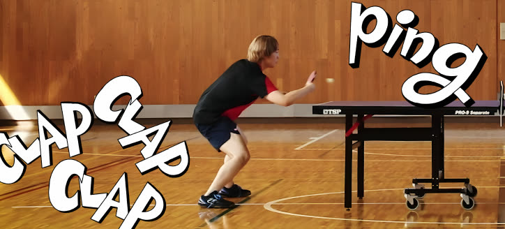
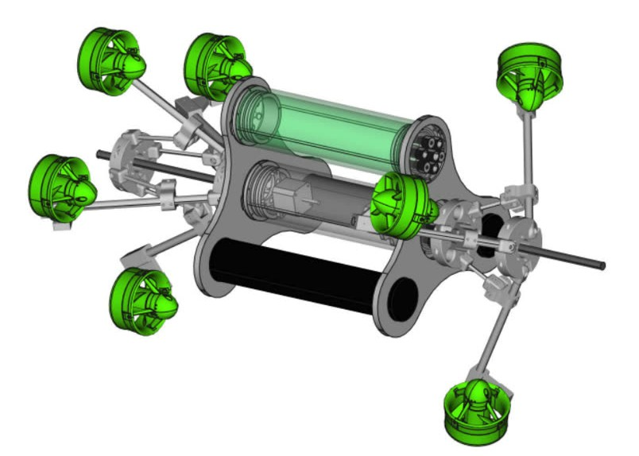
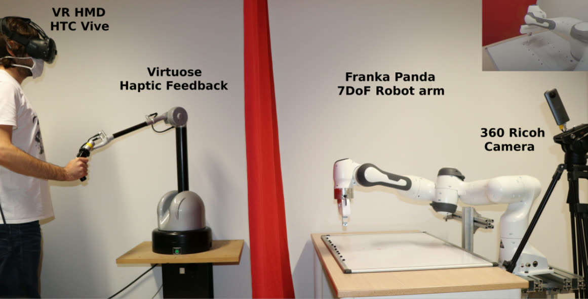
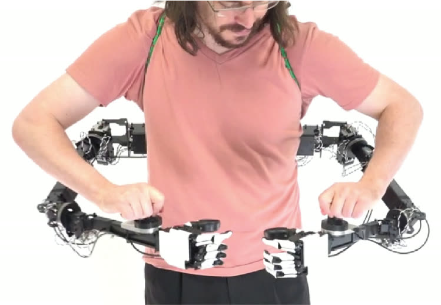
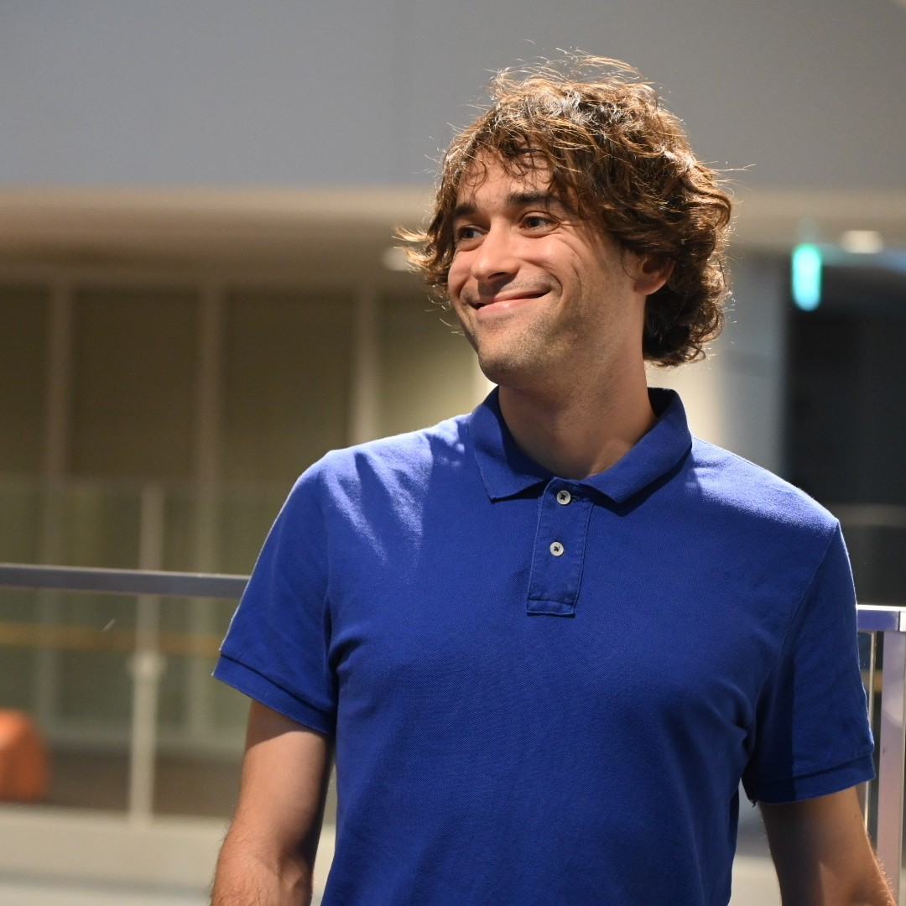

I build systems at the intersection of teleoperation, haptics, and human motor control — robots that transfer human skill, replicate physical compliance, and extend the body's reach. Currently leading robotics and vision research at Keio University KMD and contributing to Japan's JST Moonshot Avatar program.
Nine projects across teleoperation, haptics, human motor learning, medical robotics, soft robotics, and embodied systems — plus a running log of work in progress. Hover any tile to preview — click to open the full project page.
I am a French robotics researcher based in Tokyo. I currently serve as Project Assistant Professor at the Embodied Media Project, Keio University Graduate School of Media Design (KMD), where I lead the Robotics and Vision Augmentation team under Prof. Kouta Minamizawa.
My research addresses physical human–robot interaction: developing systems that enable robots to understand and replicate human motor intent — not just trajectories, but dynamic compliance, force profiles, and embodied skill. Three threads define my work: impedance-aware teleoperation, wearable supernumerary robotics, and AI-driven accessibility.
I hold a PhD from the University of Montpellier / LIRMM-CNRS (2022), funded by the JST ERATO Jizai Body project. Before Keio, I was a permanent researcher at Honda Research Institute Japan (Avatar Project, 2025) and Research Associate at Waseda University Iwata Lab (2023–2025).
I was awarded Silver Medal at WorldSkills France 2018 and Bronze Medal at EuroSkills 2018 in Mobile Robotics. I am fluent in French, English, and Japanese (JLPT N1), with intermediate Italian.
Recent news, talks, publications, and deployments.




I review for the following international conferences in robotics and intelligent systems. I am also Session Chair at Augmented Human 2026.
Reviewing scope: robotics, teleoperation, haptics, human-robot interaction, embodied systems.
Over 300 hours of university-level instruction across France and Japan, from introductory programming to advanced robotics and embedded systems.
Courses available to offer: Introduction to Robotics · Robot Programming · Autonomous Systems · Embedded Systems & IoT · Machine Learning / Deep Learning · Human–Robot Interaction · Computer Vision · Digital Literacy.
Invited talks, session chairs, and conference presentations. Video links added as recordings become available.
Recent experiments, demos, and work-in-progress footage from the lab. Click a card to play.
